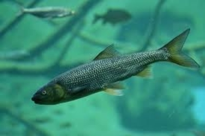
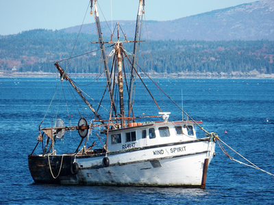

Model Description
This project models populations of fish and fishermen and how they interact. The system model illustrates the way different factors can affect the rates and quantities in each population. This model is in Vensim and is good for understanding what causes populations to change based on how they interact with one another.
Fish and Fishermen Populations
It is important to model fish and fishermen populations because today there are many instances of overfishing appearing all over the world. Overfishing is when fishermen catch and keep more fish than are being produced each year, which leads to a decreasing fish population which is unsustainable. The World Wildlife Fund says that the overfishing of top marine predators, large fish like Tuna or Groupers, has caused their populations to decrease to the point that there is concern for the long term survival of their species. To protect fish populations, the quantities of fish populations compared to fishermen need to be closely monitered. Understanding the relationship between fish and fishermen populations, as well as the other factors that go into the growth and decrease of these populations is crucial to prevent overfishing.
Using a system model is beneficial to illustrating the interactions between fish and fishermen populations because it is able to include population quantities, as well as the rates of change, and various factors that go into these populations.
Multiple system models can demonstrate the interactions between the two populations with various other factors. For example, the first system model on the system model page only includes the effects that fishermen populations have on fish populations, but the third model also includes an algae population and the effects of algae on fish populations.
Just as it is important to model the relationship between fish and fishermen to help reduce overfishing, algae can also be harmful to fish populations, and so it can be helpful to model the relationship between algae populations and fish populations. According to the Environmental Protection Agency, algal blooms, when algae reproduce quickly to create an area densely populated by algae, can produce dangerous toxins that can harm people and animals, and are enough to create dead zones in marine habitats. They also point out that one of the main requirements for an algal bloom is sunlight.
 